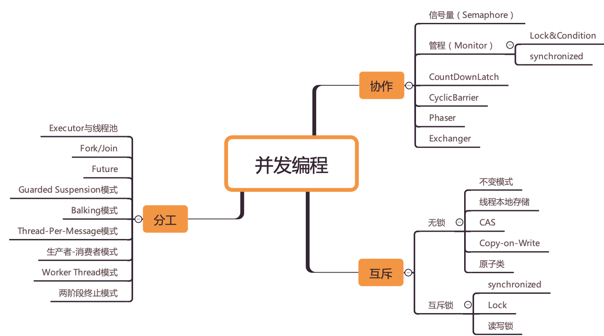

JUC并发总览

跳出来看全景
学习最忌讳的就是“盲人摸象”，只看到局部，而没有看到全局。所以，你需要从一个个单一的知识和技术中“跳出来”，高屋建瓴地看并发编程。当然，这首要之事就是你建立起一张全景图。
并发编程领域可以抽象成三个核心问题：分工、同步和互斥
从性能角度讲，我们为了提高执行一定计算机任务的效率，所以IO等待的时候不能让cpu闲着，所以我们把任务拆分交替执行，有了分时操作系统，出现了并发，后来cpu多核了又有了并行计算。这里也就是作者说的**[分工]**。
分工以后我们为了进一步提升效率和更加灵活地达到目的，所以我们要对任务进行组织编排，也就是对线程组织编排。于是线程之间需要通信，于是操作系统提供了一些让进程，线程之间通信的方式。也就是作者说的**[同步]**。
但是事物总不是完美的。并发和通信带来了较高的编程复杂度，同时也出现了多线程并发操作共享资源的问题。于是天下大势，分久必合，我们又要将对共享资源的访问串行化。所以我们根据现实世界的做法设计了了锁，信号量等等来补充这套体系。也就是作者所说的**[互斥]**。
钻进去看本质
拿我个人来说，我已经烦透了去讲述或被讲述一堆概念和结论，而不分析这些概念和结论是怎么来的，以及它们是用来解决什么问题的。在大学里，这样的教材很流行，直接导致了芸芸学子成绩很高，但解决问题的能力很差。其实，知其然知其所以然，才算真的学明白了。
我属于理论派，我认为工程上的解决方案，一定要有理论做基础。所以在学习并发编程的过程中，我都会探索它背后的理论是什么。比如，当看到 Java SDK 里面的条件变量 Condition 的时候，我会下意识地问，“它是从哪儿来的？是 Java 的特有概念，还是一个通用的编程概念？”当我知道它来自管程的时候，我又会问，“管程被提出的背景和解决的问题是什么？”这样一路探索下来，我发现 Java 语言里的并发技术基本都是有理论基础的，并且这些理论在其他编程语言里也有类似的实现。所以我认为，技术的本质是背后的理论模型。
并发领域的全景图
并发领域的「全景图」。
对于「全景图」，我之前也有一直在构建，可是因为知识储备不够，确实很难构建出来。
稍微了解过并发领域知识的人都知道，里面的知识点、概念多而散：线程安全、锁、同步、异步、阻塞、非阻塞、死锁、队列(为什么并发要跟队列扯上关系)、闭锁、信号量、活锁等等。如果单个去学这些知识点，单个去练习，如果没有「主线」，后期很容易忘。
我思考再思考，也总结了一下学习并发的主线：
首先，得理解并发的重要性，为什么需要并发？对于这个问题，只需要放在潜意识里面，只需要两个字：性能！其它的细节，再去慢慢拓展。
然后，既然并发很重要，而并发处理的是任务，接下就是：对任务的抽象、拆解、分工执行。而线程模型，只是其中的一种模型，还有多进程、协程。Java使用的是多线程模型，对应到具体的代码就是：Thread, Runnable, Task，执行任务有：Exectors。 引出了线程，有势必存在着线程安全性的问题，因为多线程访问，数据存在着不一致的问题。
再然后，大的任务被拆解多个小的子任务，小的子任务被各自执行，不难想象，子任务之间肯定存在着依赖关系，所以需要协调，那如何协调呢？也不难想到，锁是非常直接的方式(Monitor原理)，但是只用锁，协调的费力度太高，在并发的世界里面，又有了一些其它的更抽象的工具：闭锁、屏障、队列以及其它的一些并发容器等；好了，协调的工作不难处理了。可是协调也会有出错的时候，这就有了死锁、活锁等问题，大师围绕着这个问题继续优化协调工具，尽量让使用者不容易出现这些活跃性问题；
到此，「并发」的历史还在演化：如果一遇到并发问题，就直接上锁，倒也没有什么大问题，可是追求性能是人类的天性。计算机大师就在思考，能不不加锁也能实现并发，还不容易出错，于是就有了：CAS、copy-on-write等技术思想，这就是实现了「无锁」并发；
可是，事情到此还没有完。如果以上这些个东西，都需要每个程序员自己去弄，然后自己保证正确性，那程序员真累死了，哪还有时间、精力创造这么多美好的应用！于是，计算机大师又开始思考，能不能抽象出统一「模型」，可能这就有了类似于「Java内存模型」这样的东西。
JUC并发知识图
第一阶段：Java多线程基础知识
- Java多线程介绍
- 多线程编程入门
- 线程创建与启动以及线程状态
- Runnable接口详细详解
- 线程优先级以及守护线程详解
- 线程同步
- 线程间通讯
- 线程组详解
- 自运行对象详解
- 线程异常回调
- 线程池详解
- 等待线程完成任务
- 阻塞IO和多线程详解
- 如何优雅的结束线程
- 自定义线程锁详解
- FIFO队列与线程
- 多线程API查漏补缺
第二阶段：多线程设计模式详细介绍
- 多线程内容回顾
- WaitSet概念介绍
- 多线程程序衡量标准讨论
- Single Thread Execution模式介绍
- 不可变对象以及线程安全对象介绍
- Guarded Suspension模式讲解
- Balking模式详细介绍
- Producer-Consumer设计模式详细介绍
- 读写锁设计模式详细介绍
- Thread-Per-Message模式详细介绍
- Worker模式详细介绍
- Future设计模式详细介绍
- Two-Phase-Termination设计模式详细介绍
- Thread-Specific Storage模式详细介绍
- Active Object接受异步消息的主动对象
- 设计模式查漏补缺
第三阶段：JDK并发包详细介绍
- 原子变量详细介绍
- Unsafe详细介绍
- CountDownLatch详细介绍
- CyclicBarrier详细介绍
- Exchanger详细介绍
- ExecutorService详细介绍
- Phaser详细介绍
- 显式锁详细介绍
- ReetrantLock详细介绍
- ReadWriteLock详细介绍
- StampedLock详细介绍
- Condition详细介绍
- Semaphore信号量详细介绍
- ForkJoin框架详细介绍
- 并发容器详细介绍
- ConcurrentHashMap详细介绍
- ConcurrentLinkedDeque
- ConcurrentSkipListMap
- ConcurrentSkipSet
- CopyOnWriteArrayList
- CopyOnWriteArraySet
- DelayQueue
- LinkedBlockingDeque
- LinkedBlockingQueue
- LinkedTransferQueue
- PriorityBlockingQueue
- CompletableFuture详细介绍
- 自定义并发类
- 自定义ThreadPoolExecutor
- 实现一个优先级线程池
- ThreadFactory详细介绍
- 自定义Lock
- 自定义原子对象
第四阶段：并发编程深入探讨
- 死锁诊断，JVM工具，线程堆栈介绍
- 线程安全讨论
- 数据共享，以及数据共享带来的安全隐患
- 构建线程安全的类，选择优化策略
- 构建并行任务详细介绍
- 执行并行任务详细介绍
- 任务的执行与关闭
- 线程池的优化
- 线程上下文，性能，可伸缩性探讨
- 多线程中的锁详情讲解
- 构建同步工具
- 原子变量与非阻塞同步机制
- Google Concurrent包介绍
- Google EventBus包介绍